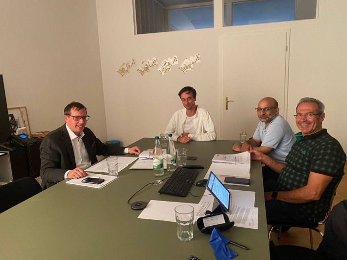
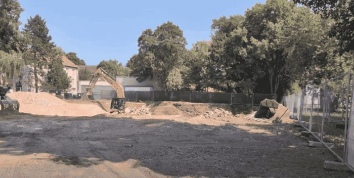
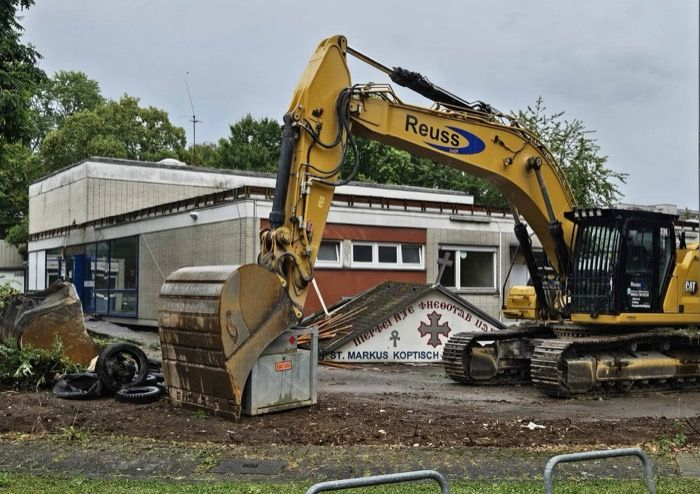
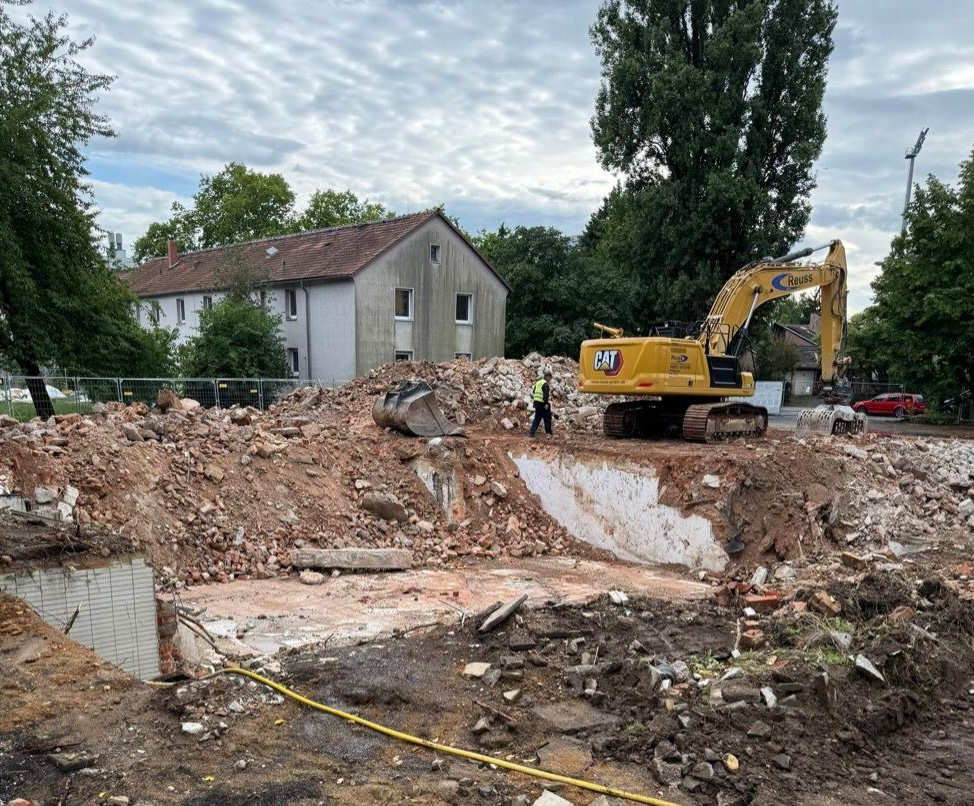
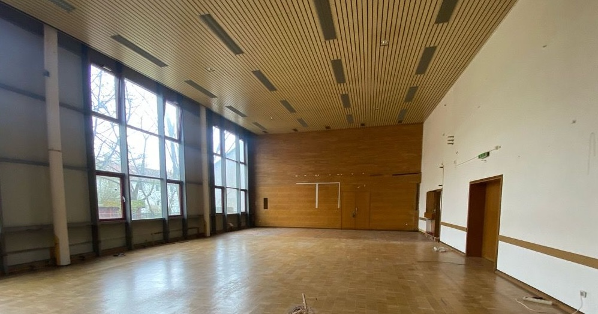
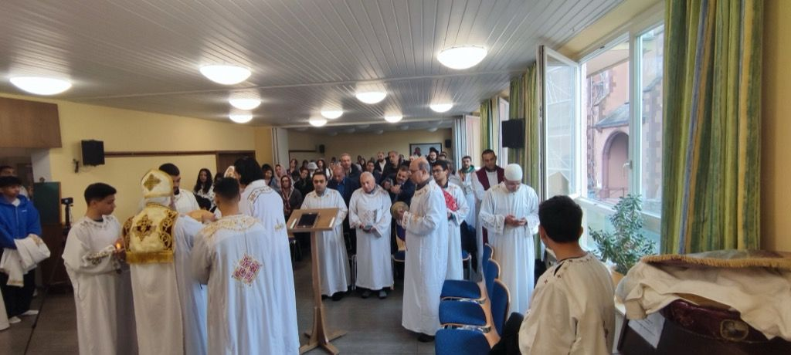
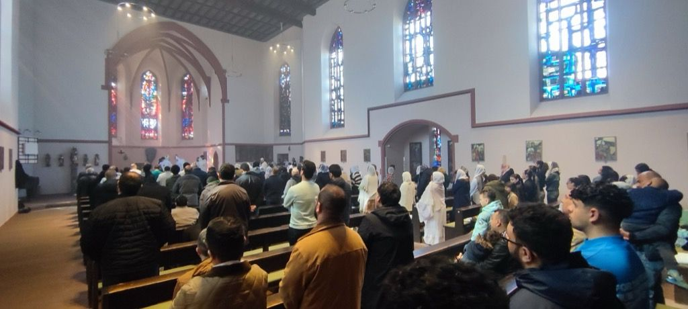

2025
30. Juli
-
Beauftragung Bauunternehmen für Rohbauarbeiten – Jökel

7. Juli
- Abschluss Abrissarbeiten

Mai
- Beauftragung Architekt (LP 8 + 9)
7. Juni
- Beginn Abrissarbeiten


April
- Räumung des Gemeindezentrums beendet

23. März
-
Erster Gottesdienst am Interimsstandort Herz Jesu, Oberrad


16. März
- Letzer Gottesdienst in der alten Kirche
15. März
- Erhalt der schriftlichen Baugenehmigung
März
- Beginn der Räumung des Gemeindezentrums
Februar
- Mündliche Zusage der Baugenehmigung
2024
Sep
- Beauftragung Architekt (LP 5–7)
April
- Finanzierungszusage GLS Bank
2023
Dezember
- Vorstellung beim Ortsbeirat
September
- Beauftragung Architekt als Generalplaner (LP 1–4)
April
- Schadstoff- & Baugrundgutachten beauftragt
Februar
- Bauherrenvertretung festgelegt
2022
Sep–Dez
-
Projekt bei Bauaufsicht vorgestellt, Gespräche mit
Ortsvorsteher, Kirchendezernent, OB-Vertreter
Juli
- Beginn der Gespräche mit Banken
2021
Jul – Nov
-
Vorstellung des Entwurfs bei Vorstand, Bischof und Gemeinde
Jan - Mai
- Konzept-Studie durch den Architekten
2020
Mai - Sept
-
Architektenauswahlverfahren und Entscheidung für das Büro
Wandel Lorch.